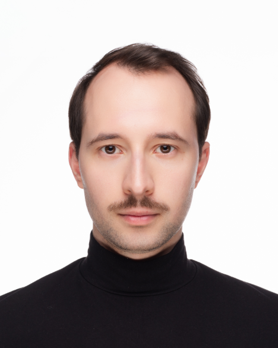

Я дизайнер интерактивных пространств. А ещё архитектор — поэтому в проектах сначала разбираюсь, какой опыт хочу создать для пользователя, а уже потом — с инструментами, которые до этого доведут.
Коммерческой разработкой на игровых движках занимаюсь 2 года — это проекты по интерактивной архитектурной визуализации. Сейчас — Level Designer Generalist в студии визуализации MARTA. До этого в одиночку делал интерактивное портфолио для проектного института KRGP.
До перехода в разработку 7 лет занимался архитектурным проектированием и BIM-технологиями в строительстве — вёл проекты, координировал работу команд инженеров.
🤝 Люблю делать продукты удобными, налаживать процессы, разрешать спорные ситуации. Нравится объяснять и отстаивать решения.
Telegram ✈Определяю, какие эмоции хочется вызвать у пользователя/зрителя, и принимаю продуктовые решения исходя из этого.
Смотрю на проект как на единое целое и слежу, чтобы отдельные части складывались в цельную картину.
За плечами 7 лет строительного проектирования, поэтому пространство считываю как архитектор, а контролирую работы как прораб.
Последние полгода применяю ИИ-инструменты во всём — от корректирования текстур и написания кода до генерации музыки, видео и изображений и менеджмента задач.